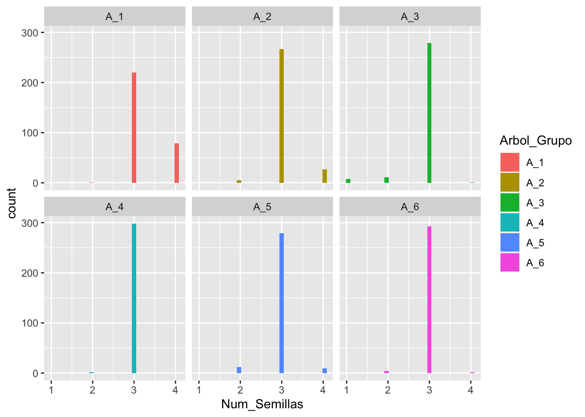
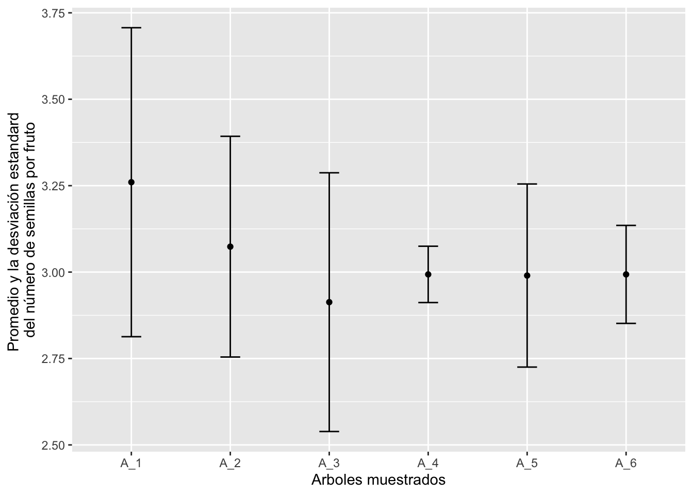

¿Donde se encuentra la variación?
El termino en estadistica se llama “dispersión”
La presentación siguiente tiene los conceptos principal del concepto de variación subindividual
Evaluar la variación entre individuos y sub-individual de la cantidad de semillas por frutas en una especie de Eucalyptus
Cada estudiante (grupo de 2 solamente) contabilizara 150 frutos, y contará el número de semillas por fruta.
El informe sera guiado por preguntas especificas. (25 puntos)
ANALISIS de los datos
library(readxl)
Eucalyptis_2 <- read_excel("Eucalyptis_2.xlsx")
head(Eucalyptis_2)## # A tibble: 6 × 2
## Arbol_Grupo Num_Semillas
## <chr> <dbl>
## 1 A_1 3
## 2 A_1 3
## 3 A_1 3
## 4 A_1 3
## 5 A_1 3
## 6 A_1 4library(tidyverse)## ── Attaching packages ─────────────────────────────────────── tidyverse 1.3.1 ──## ✓ ggplot2 3.3.5 ✓ purrr 0.3.4
## ✓ tibble 3.1.6 ✓ dplyr 1.0.8
## ✓ tidyr 1.2.0 ✓ stringr 1.4.0
## ✓ readr 2.1.2 ✓ forcats 0.5.1## ── Conflicts ────────────────────────────────────────── tidyverse_conflicts() ──
## x dplyr::filter() masks stats::filter()
## x dplyr::lag() masks stats::lag()ggplot(Eucalyptis_2, aes(Num_Semillas, fill=Arbol_Grupo))+
geom_histogram()+
facet_wrap(~Arbol_Grupo)## `stat_bin()` using `bins = 30`. Pick better value with `binwidth`.
ggsave("Eucalyptis_Histogram.png")## Saving 7 x 5 in image
## `stat_bin()` using `bins = 30`. Pick better value with `binwidth`.Cual es la variación en el número de semillas por árbol
Eucalyptis_2 %>%
select(Num_Semillas, Arbol_Grupo) %>%
group_by(Arbol_Grupo) %>%
drop_na() %>%
summarise(mean= mean(Num_Semillas),
varianza = var(Num_Semillas),
desviación_estandar = sd(Num_Semillas),
CV=desviación_estandar/mean)## # A tibble: 6 × 5
## Arbol_Grupo mean varianza desviación_estandar CV
## <chr> <dbl> <dbl> <dbl> <dbl>
## 1 A_1 3.26 0.200 0.447 0.137
## 2 A_2 3.07 0.102 0.319 0.104
## 3 A_3 2.91 0.140 0.374 0.128
## 4 A_4 2.99 0.00664 0.0815 0.0272
## 5 A_5 2.99 0.0701 0.265 0.0886
## 6 A_6 2.99 0.0201 0.142 0.0474Ahora evaluar si más variación dentro del árbol o entre arboles, usando un analis de varianza (ANOVA)
model1=aov(Num_Semillas~Arbol_Grupo, data = Eucalyptis_2)
summary(model1)## Df Sum Sq Mean Sq F value Pr(>F)
## Arbol_Grupo 5 21.72 4.344 48.38 <2e-16 ***
## Residuals 1791 160.78 0.090
## ---
## Signif. codes: 0 '***' 0.001 '**' 0.01 '*' 0.05 '.' 0.1 ' ' 1El componente de “Sum Sq” = SUm of squares (La suma de los cuadrados)
La parte de Arbol_Grupo representa la variación entre arboles, los residuales, la variación dentro de los grupos.
Hacemos una gráfico de la diferencias entre los arboles y su desviación estandard
E3=Eucalyptis_2 %>%
select(Num_Semillas, Arbol_Grupo) %>%
group_by(Arbol_Grupo) %>%
drop_na() %>%
summarise(mean= mean(Num_Semillas),
varianza = var(Num_Semillas),
desviación_estandar = sd(Num_Semillas),
CV=desviación_estandar/mean)
E3## # A tibble: 6 × 5
## Arbol_Grupo mean varianza desviación_estandar CV
## <chr> <dbl> <dbl> <dbl> <dbl>
## 1 A_1 3.26 0.200 0.447 0.137
## 2 A_2 3.07 0.102 0.319 0.104
## 3 A_3 2.91 0.140 0.374 0.128
## 4 A_4 2.99 0.00664 0.0815 0.0272
## 5 A_5 2.99 0.0701 0.265 0.0886
## 6 A_6 2.99 0.0201 0.142 0.0474ggplot(E3, aes(y=mean, x=Arbol_Grupo))+
geom_point()+
geom_errorbar(aes(ymin=mean-desviación_estandar, ymax=mean+desviación_estandar), width=.2,
position=position_dodge(0.05))+
ylab("Promedio y la desviación estandard \ndel número de semillas por fruto")+
xlab("Arboles muestrados")
ggsave("mean_SD.png")## Saving 7 x 5 in image